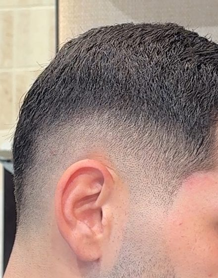
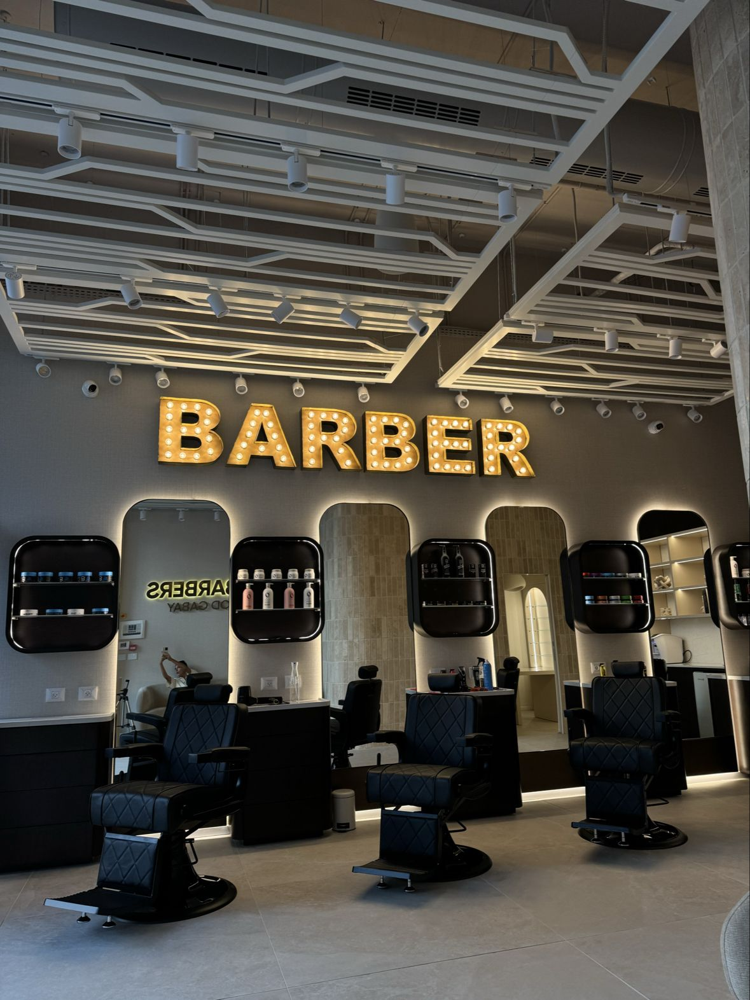
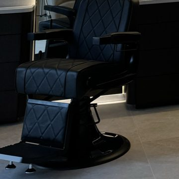
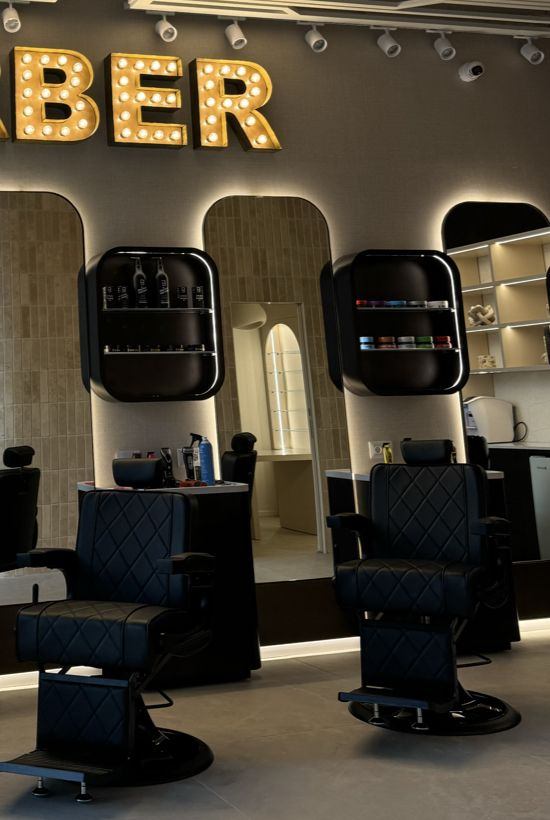

פייד נקיA clean fade
מתוך התמונות של המספרהFrom the shop’s own photos
קונספט לדוגמה שנבנה עבור Tío Barbers · זה אינו האתר הרשמי של העסקA sample concept built for Tío Barbers · This is not the business’s official website

מספרת גברים בקריית מוצקיןA men’s barbershop in Kiryat Motzkin
שושנה דמרי 4, קריית מוצקין.4 Shoshana Damari St, Kiryat Motzkin.
השלט שמאיר את החדר.The sign that lights the room.
כיסאות עור בתפר יהלום.Leather chairs, diamond-stitched.
מהתמונות של המספרה ומהביקורות בגוגל.From the shop’s photos and its Google reviews.

מתוך התמונות של המספרהFrom the shop’s own photos
71 ביקורות בגוגל71 Google reviews
״הכול מסודר דרך אפליקציה״
“Everything is organised through the app”
תמונה להמחשהIllustrative photo

״כל שבועיים קבוע אצלו עם הילדים״
“Every two weeks, regularly with him, with the kids”
מדליקים שני מתגים, וההודעה כותבת את עצמה.Flip two switches and the message writes itself.
ספר הכי טוב בקריות!!!!! אני בא מעפולה במיוחד להסתפר אצלו
Best barber in the Krayot!!!!! I come all the way from Afula just to get my hair cut by him
מספרת גברים ברמה גבוהה מאוד. הוד ועמית ספרים מעולים, מסתפר באופן קבוע אצלם
A men’s barbershop of a very high standard. Hod and Amit are excellent barbers; I get my hair cut by them regularly
אחד הספרים הכי טובים,יחס מעולה מקצועי מאוד ומקבל בזמן שזה הכי חשוב הכול מסודר דרך אפליקציה
One of the best barbers, great attitude, very professional and takes you on time, which matters most. Everything is organised through an app

באפליקציה של Tío Barbers (ב-App Store וב-Google Play), או בהודעת וואטסאפ ל-050-855-4452.In the Tío Barbers app (App Store and Google Play), or with a WhatsApp message to 050-855-4452.
ברחוב שושנה דמרי 4, קריית מוצקין.At 4 Shoshana Damari St, Kiryat Motzkin.
כן, בשישי 9:00–15:00. בשבת המספרה סגורה.Yes, Friday 9:00–15:00. Closed on Saturday.
לקוחות כותבים בגוגל שהם מגיעים עם הילדים באופן קבוע.Customers write on Google that they come with their kids regularly.
קריית מוצקיןKiryat Motzkin